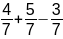
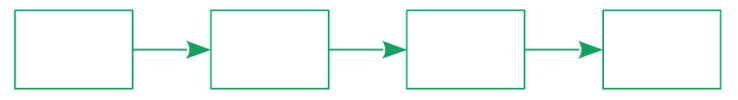
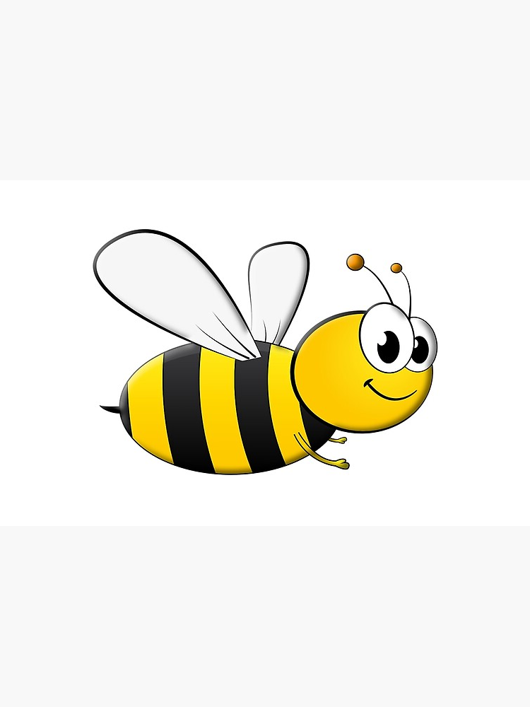
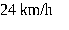

Calculer
mentalement : C =
 |
On considère le programme de calcul suivant : ● Choisir un nombre ● Multiplier par 3 ● Ajouter 4 au résultat Quel nombre doit-on choisir au départ pour obtenir 25 comme résultat final.
 |
 
Calculer la distance parcourue par l’abeille pour rejoindre la fleur.
|